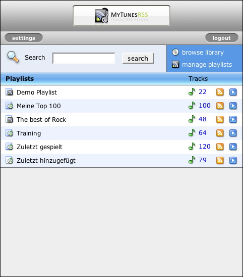

Portal
Das Portal ist die Startseite von MyTunesRSS. Sie sehen im Portal alle verfügbaren Playlisten. Das sind die meisten Playlisten aus iTunes (einige wie z.B. der Partyshuffle werden nicht angeboten) und alle MyTunesRSS Playlisten, die Sie sich mit Hilfe der Webanwendung erstellt haben. Sie erkennen die unterschiedlichen Playlisten an Ihren Symbolen.
Vom Portal aus gelangen Sie an die Einstellungen und Sie können sich ausloggen. Beim Ausloggen wird ein möglicherweise vorher beim Login gesetzter Cookie wieder gelöscht. Sie werden also dauerhaft ausgeloggt, auch wenn Sie beim Login die Option eingeloggt zu bleiben aktiviert hatten. Sie können vom Portal aus in Ihre Bibliothek springen und diese nach Alben oder Künstlern durchsuchen und den Playlist Manager aufrufen, um Ihre MyTunesRSS Playlisten zu verwalten.
Die Suchfunktion kann genutzt werden, wenn Sie ungefähr wissen, welche Titel, Alben oder Künstler Sie anzeigen möchten. Sie können mehrere Suchbegriffe durch Leerzeichen getrennt eingeben. Die Begriffe werden UND-Verknüpft, d.h. sie müssen alle in einem Titel und dem Album oder Künstler des Titels vorkommen für einen Treffer. Zum Beispiel würde eine Suche nach "madonna music" alle Titel von Madonna finden, deren Album und Titel das Wort "Music" enthält. Bei der Suche werden Groß-/Kleinschreibung nicht beachtet.
Hinter jeder Playlist stehen die Anzahl der Titel in der Playlist. Mit einem Klick auf die Anzahl werden die Titel angezeigt. Am Ende jeder Zeile finden Sie die Symbole zum Erzeugen einer M3U Playliste oder eines RSS Feeds aus der kompletten Playliste.
